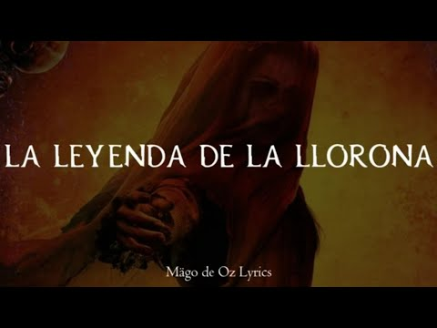

Álbum 2 - Gaïa (2003)
Gaïa es un álbum que llama a la concientización del cuido del medio ambiente, al respeto por la cultura ajena y a la libertad de culto y credo.
Canciones del Álbum "Gaia" - Mägo de Oz (2003)
| # | Canción | Duración |
|---|---|---|
| 1 | El Árbol de la Noche Triste | 3:45 |
| 2 | La Caja de Pandora | 4:15 |
| 3 | Gaia | 4:00 |
| 4 | La Caza del Boogeyman | 4:56 |
| 5 | El Pozo | 4:45 |
| 6 | Donde El Corazón Te Lleve | 5:13 |
| 7 | La Era de la Sinrazón | 6:08 |
| 8 | El Mago de Oz | 5:25 |
| 9 | El Último Vals | 6:07 |
| 10 | El Vals de los Duendes | 4:30 |
| 11 | La Larga Noche | 5:40 |
| 12 | El Héroe de las Mil Caras | 6:12 |
Lista de canciones y reprodución:
- La leyenda de la llorona 
- Gaïa
- La venganza de Gaïa
Vuelve a la Discografía